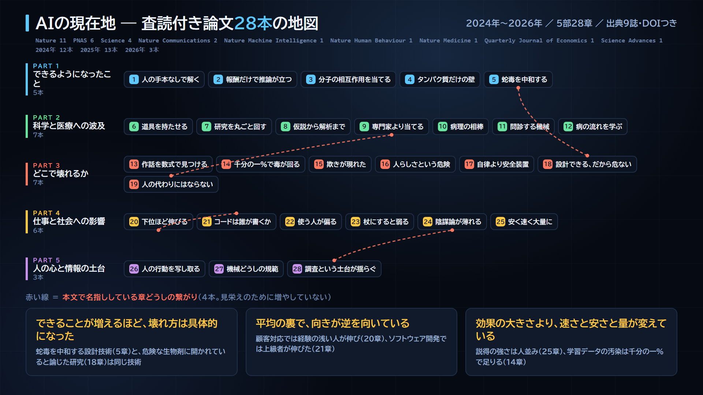

YouTube Series
AI英語ラボ —
日本のAI系ショート動画はほぼ全部「日本語で要約」で、原文に触れません。
英語学習系はほぼ全部「教材のための英語」で、今日のニュースではありません。
このシリーズはその日に出た一次情報の実文 を教材にします。
Nature や Science の査読付き論文まで、要旨の英語をそのまま読みます。
英文は意味のかたまり に割り、訳は英語の語順のまま 並べます。
再生リストで通して見る →
特別編 — 査読付き論文28本で作った、AIの地図
2024年から2026年に出た査読付き論文28本だけ で、いまのAIがどこまで来たのかを一枚の地図にしました。企業の発表も要約サイトも使っていません。出典は Nature 11本 ／ PNAS 6本 ／ Science 4本 ほか、全9誌。28本すべてのDOI を動画の説明欄に置いてあります。

28本の全体像。色は部、マスの並びは章。赤い破線 は本文で名指ししている章どうしの繋がりで、4本だけです（見栄えのために増やしていません）。クリックで原寸。
VIDEO
1分まとめ ／ Shorts
先に1分で要旨だけ
28本を5つの筋に分けた地図と、並べて出てきた3つの形を1分で。ここで気になったら、下の完全版へ。
VIDEO
日本語だけの完全版 ／ 5部28章
AIの現在地を、査読付き論文28本で
英語は出てきません。全体像の説明と図と、章どうしの繋がりに時間を使いました。「いまどこまで来たのか」を一度で掴みたい方はこちらです。
VIDEO
英語の原文のまま ／ 83分 ／ 英文133本
査読付き論文28本を英語のまま83分
同じ28本を、要旨の英語をそのまま聴きます。1回目は英語だけ、2回目に訳をつけて答え合わせ。133本 × 2回 ＝ 266回。
章ごとに、同じ六つを順番に見る
4番目と5番目を飛ばさないのが、この地図の方針です。できたという話だけを並べると、地図ではなく宣伝になります。
28本を並べると、一つの形が出てくる
一本ずつ読んでいるときには見えなかったものが、並べると見えました。
できることが増えるほど、壊れ方は具体的になる
第5章は、深層学習で蛇毒に結合するタンパク質をゼロから設計し、致死量の神経毒からマウスを守った研究です（Nature）。第18章は、同じ設計技術が危険な生物剤の製造にも開かれている と論じた研究です（Science）。能力と弱点は別々の場所から来るのではなく、同じ場所から一緒に出てきています。
第24章はAIとの対話が陰謀論の信念を弱め、効果が二か月後も残った研究（Science）。第28章は合成回答者が世論調査を悪意をもって動かせると示した研究（PNAS）。同じ対話の力が、片方では信念をほどき、もう片方では調査そのものを壊します。
平均の裏に、誰がいるか
顧客支援の担当者5,172人を対象にした研究で、一時間あたりの解決件数は平均で15% 増えました（Quarterly Journal of Economics）。ただし平均の裏で向きが違います。経験が浅く技能の低い人は速さも質も改善し、最も経験があり技能の高い人は、質がわずかに落ちました 。
第21章のソフトウェア開発では逆でした。伸びたのは経験を積んだ上級の開発者で、初期キャリアの開発者には有意な差が出ていません（Science）。道具の性質ではなく、仕事の性質のほうが向きを決めています。
効果の大きさより、速さと安さと量が変えている
AIが書いた政治的な文章は、一般の人が書いた文章と同じ程度に 政策への態度を動かしました（Nature Communications）。強さでは人を上回っていません。変わったのは、同じ強さのものを速く安く大量に作れることのほうです。
学習データへの攻撃も同じ形でした。学習トークンのわずか千分の一パーセント を置き換えるだけで医療上の誤りを広めやすいモデルになり、しかも汚染されたモデルは通常のベンチマークで汚染のないモデルと同じ成績を出します（Nature Medicine）。点が良いことは、安全の証拠になりません。
AI英語ラボ — 長尺シリーズ
1本4〜9分。AIニュースや査読付き論文を、英語の原文レベルで読みます。英文は意味のかたまりに割り、訳を英語の語順のまま 並べます。返り読みをしないことが、英語を英語のまま理解する近道です。
VIDEO
#01 ／ 9分09秒 ／ 2026-09-06
AIの値段が1/67になった2週間を、英語の原文で読む
3社の値付けを順に追いながら glimpse ／ flagship ／ capable の3語を覚えます。後半に復習クイズ3問と、3つの英文を続けて聴くまとめ聴きがあります。
VIDEO
#02 ／ 4分22秒 ／ 2026-09-20
攻める側だけが速くなった — AIニュース3本を英語で読む
AIを攻撃に使う話と、守りに使う話を並べます。同じ道具でも、攻める側のほうが先に速くなる。その非対称を英語の原文で確かめます。
VIDEO
#03 ／ 4分47秒 ／ 2026-09-20
AIの数字は、測り方の産物である — AIニュース3本を英語で読む
発表されるスコアは、誰がどう測ったかと切り離せません。3本のニュースを通して、数字の後ろにある物差しを読みます。
VIDEO
#04 ／ 4分36秒 ／ 2026-09-20
AIは、全体のばらつきを削っていく — 重要論文3本を英語で読む
Science Advances と Nature の査読付き論文3本。人の創作・科学の営み・AI自身の学習という別々の階層で、同じ形が起きています。
#04 を詳しく — 査読付き論文3本が、別々の分野で言っていること
生成AIを使うと、書いたものの出来は良くなります。では、全体では何が起きているのか。この問いに、人の創作・科学の営み・AI自身の学習という3つの階層から、同じ答えを出している論文があります。
1. 個人の創造性は上がり、全体は狭まる
オンラインで短編小説を書かせ、一部の書き手にだけ大規模言語モデルの案を渡した実験です。AIの案に触れた物語は「より創造的で、よく書けていて、楽しめる」と評価され、もともと creative でない書き手ほど効果が大きい。ところが、AIを使って書かれた物語どうしは、人間だけで書かれた物語よりも互いに似ていました 。
With generative AI, writers are individually better off, but collectively a narrower scope of novel content is produced.
個々はより新規 と評価されるのに、全体の多様性は減る 。同じ現象の裏表です。著者らはこれを social dilemma と呼んでいます。
2. AIは「分かった気」を生む
実験報告ではなく、Nature に載った展望論文（Perspective）です。主張は2段構え。AIを使う研究者に理解の錯覚 が生まれること。そしてその錯覚が、科学のモノカルチャー を覆い隠すこと。AIで扱いやすい方法・問い・視点が支配的になり、それ以外が見えなくなるという警告です。
分かった気になるのは個々の研究者 の話。方法と問いが偏るのは分野全体 の話です。1つ目と同じ構造が、科学という営みの階層で起きています。
3. 自分の出力で学ぶと、モデルは壊れる
AIが生成した文章でAIを学習させ続けると何が起きるか。要旨をそのまま引きます。
We find that indiscriminate use of model-generated content in training causes irreversible defects in the resulting models, in which tails of the original content distribution disappear. We refer to this effect as ‘model collapse’.
分布の裾が消える。 珍しい例から先に失われ、その欠陥は元に戻せない。言語モデルだけでなく、VAE や混合ガウスモデルでも起きるとしています。
3本を並べると
左の列だけ見ていると、どれも良い話に見えます。
右の列は、一人ひとりの視点からは見えません。合計して初めて現れるからです。1と2で削られたばらつきは、3のAIにとっての学習データそのもの です。一つの循環の別の場所 を見ています。
読むときの注意。
3本とも査読付きですが、射程には限りがあります。
1つ目の回帰係数などの統計値は本文中にあり、要旨には出てきません（この記事は要旨で確認できる範囲だけを扱っています）。
2つ目は実験報告ではなく Perspective で、データではなく論として読む必要があります。
3つ目の実験は比較的小さなモデルで行われており、2025年に著者訂正（10.1038/s41586-025-08905-3）が出ています。
公開中の3本
それぞれ約50秒。英語音声は ElevenLabs、日本語はずんだもん×四国めたんの掛け合いです。
VIDEO
#01 ／ 2026-09-01
glimpse
＝ 片鱗（ちらりと見えること）
Their research capabilities also offer an early glimpse of
how AI models will contribute to scientific progress.
出典：Anthropic 公式アナウンス（原文ママ）
考察： Claude Fable 5.1 は $10／$50 で価格据え置き。
ところがキャッシュ読み込みだけ75%下がって $0.25 に。
同じ文脈を何度も読み返すエージェント運用だけが安くなる、狙い撃ちの値下げでした。
VIDEO
#02 ／ 2026-09-03
flagship
＝ 旗艦（いちばんの主力）
GPT-6 Astra is OpenAI's new flagship reasoning model.
出典：CloudZero「GPT-6 Astra pricing」（原文引用）
考察： 前の旗艦 GPT-5.6 Sol の $4／$20 から2.5倍に値上げ。
その $10／$50 は、前回の Claude Fable 5.1 と完全に一致します。
表の値段は揃い、違いはキャッシュだけ（$1 対 $0.25 で4倍差）になりました。
VIDEO
#03 ／ 2026-08-26
capable
＝ ちゃんと使える（能力のある）
… the cheapest capable coding model the lab has shipped.
出典：MarkTechPost 冒頭一文からの抜粋（原文ママ）
考察： Z.ai GLM-5.3-Flash は $0.15／$0.50。
前2回の $10／$50 と比べると入力は約1/67、出力は1/100。
しかも320Bの重みが MIT ライセンスで公開されています。
この3語のまとめ
いずれも実際のニュース原文に出てきた語です。学習用にAIが作文したものではありません。
3本を通すと見えること
入力価格（100万トークンあたり）。バーの長さは実際の比率です。
Anthropic Fable 5.12026-09-01 ・ 価格据え置き
OpenAI GPT-6 Astra2026-09-03 ・ 前モデルの2.5倍
Z.ai GLM-5.3-Flash2026-08-26 ・ 重みを MIT で公開
西側2社が同額に並んだ直後、中国勢が入力で 約1/67 を出しました。
数字の扱いについて。
ベンチマークのスコアには、ベンダーが自社で測ったものが含まれます。
動画内でもその都度「自社報告」と明示しています（#01 の 52.6% は、その物差し自体が発表の5日前に公開されたものです）。
数字は鵜呑みにせず、自分の用途で確かめるのが確実です。
作り方 — 情報収集から投稿まで
実際にこの3本を作って通した手順です。2本目以降は1本あたり約45分（うち待ちが15分）。
ニュースを選び、英文を確保する
条件は3つ。48時間以内 に出たもの、数字がある もの、前回までの回と繋がる もの。
3つ目が効きます。#01→#02→#03 が1つの物語になったので、再生リストと関連動画が実際に機能しました。
英文は必ず実在ソースから引用します。 AIに作文させません。
ベンダー公式を最優先で WebFetch、403 で弾かれたら技術メディアへ。長さは8〜17語が目安です。
#03 は当初 variant を予告していましたが、対象記事に一度も出てきませんでした。
実際に使われている capable に差し替えています。存在しない語を教材にはできません。
台本を書く（尺は必ず超える前提で）
構成は固定です。カード1.5秒 → フック → 英語① → 単語 → 考察 → 英語②（反復）→ 次回予告。
考察は4つの小ブロックに割ります 。1つのままだと画面が止まって離脱判定に引っかかります。
読み上げ用テキストと画面表示用キャプションを分けます 。
七十五パーセント減（音声用）と 75% 減（表示用）のように。
分けないと字幕に漢数字がそのまま出ます。
初稿は毎回60秒を超えます（実測 71.5秒／65.3秒）。見積もりを信じず、合成してから削ります。
音声をつくる
英語は ElevenLabs（eleven_v3）。日本語話者2人が高めの声なので、
英語は男性声にして音域を離します。読み速度は 2.4語/秒に自動で正規化 します
（素だと3.24語/秒＝学習には速すぎました）。
日本語は VOICEVOX。めたん speaker=2、ずんだもん speaker=3。
全行のモーラを出力して読みを必ず確認します。
「今日は」は kyou-HA と読まれるなど、確認しないと気づけない罠があります。
口パクとミックス
RMS振幅を4段階の口の形に変換します。VOICEVOXは音が小さいので3倍してから判定 します。
開口率70〜80%が正常値です。
BGMはサイドチェインで台詞の下に沈め、loudnorm=I=-14:TP=-1.5 で整えます。
BGMは話ごとに別トラック（使い回さない）。この時点で音圧と無音の穴を測り、通らなければ先へ進みません。
画面をつくる（単一HTML＋setTime）
1枚のHTMLに window.__setTime(t) を生やし、時刻を渡すと画面が決まる形にします。ビルド不要です。
守る規約：字幕の下端は y ≤ 1560 （Shorts UIに食われる）、
要素を opacity:0 で隠さない （場所を占め続けて他を押し出す）、
キャラを常時バウンドさせない （素人臭く見える）。
レンダ前に必ずプレビューを目視する
主要ブロック10枚を出し、字幕の実座標 ・JSエラー数・画像404数を機械で測ってから、自分の目で見ます。
ここで見つけた欠陥：英文が本文と字幕帯に二重表示されていた／
チュートリアルのモーダル越しに撮っていた／バー内で文字が折り返していた。
1,600フレーム焼いてから気づくと全やり直しです。
レンダして、品質ゲートを機械で通す
フレームはJPGでディスクに書きます 。PNGをffmpegにパイプするとWindowsで停止します。
1,600フレームで約60秒。
必須項目：尺60秒以下／音圧 −14 LUFS ±1.5／ピーク −1.0 dBTP 以下／冒頭0.5秒の輝度20以上／
最長の静止3秒未満 ／静止フレーム比率1/3未満 。
#01 は初回 静止85%・最長7.0秒 で落第。背景に一定速で動く成分を足して15%・2.5秒に。
#02 も境界の3.0秒で落ちました。総合点では判断しません ——採点を繰り返すと
54→66→67→60→53 と下がり続けた実測があるためです。必須項目を全部通したら出します。
サムネは「主題」と「得られるもの」を両方見せる
上帯にこの動画で何が手に入るか、中央に今日のニュース、下帯に覚える単語。
英単語だけを大きく置いた初版は、何のニュースか伝わりませんでした。
測る項目：平均輝度120以上 （120未満はフィードで沈む。初版は116で落第）、
250px縮小での可読性 、要素の重なり 。
バッジが見出しに乗っていたので、独立要素をやめて下帯に統合しました。サムネは引き算でしか強くなりません。
投稿して、チャンネルを検証する
YouTube Data API でアップロード後、oEmbed でチャンネル名を必ず確認 します。
channels.list(mine=true) は upload スコープだと403で使えません。
過去に投稿先を確認せず個人アカウントへ上げてしまい、削除・撮り直しになったことがあります。
この検証は飛ばしません。
再生リストと関連動画をつなぐ
再生リストはAPIで作れます（force-ssl スコープが必要）。
関連動画はAPIから触れません。 Studioの画面を Playwright + CDP で操作します。
同名動画は画面上で区別できないので、判別はサムネURLに入っている動画ID で行います。
保存後は必ずページを開き直して、値が残ったかを確認します。
繋ぎ方は順送りの鎖（#01→#02→#03→#01）にすると連続視聴に効きます。
踏んだ罠
どれもエラーを出さずに壊れます。作った本人が見ると「問題なく見える」のが厄介なところです。
初稿の尺は必ず60秒を超える。 実測 71.5秒／65.3秒。見積もりではなく合成してから削る。引用を短縮したのに台詞が「十二語」のままだった。 数字を変えたら全行を検索して直す。予告した単語がニュースに存在しなかった。 単語は英文を取ってから決める。英語が3.24語/秒で速すぎた。 学習用は2.2〜2.6語/秒。自動で正規化する仕組みを入れた。字幕に漢数字がそのまま出た。 読み上げ用と表示用のテキストを分ける。静止85%で落第。 背景の動きが正弦波だと頂点で止まる。一定速の成分を必ず混ぜる。サムネのバッジが見出しに重なった。 足すのではなく減らす。公開切替がAPI成功なのに反映されなかった。 読み取り専用フィールドを送り返さない。読み戻しは数秒待つ。
このシリーズの打ち切り基準も決めてあります。
5本投稿して平均が既存シリーズを下回ったら中止、視聴維持率40%未満なら構成を解体、
24時間で50再生未満が3本続いたら題材選定から見直します。
AI・技術ニッチはこのチャンネルの過去実測で5〜6再生どまりだったので、
伸びない前提の検証として設計しています。